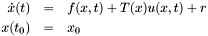
with:
As shown on the class diagram above, there are five possible formulations for dynamical systems in Siconos, three for first order systems and two for second order Lagrangian systems. The main class is DynamicalSystem, all other derived from this one.
A general dynamical systems is described by the following set of n equations, completed with initial conditions:
The Jacobian matrix, 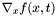, of f according to x, nX n square matrix, is also a member of the class.
Initial conditions are given by the member x_0, vector of size n. This corresponds to x value when simulation is starting, ie after a call to strategy->initialize().
There are plug-in functions in this class for f, its Jacobian, jacobianXF, u and T. All of them can handle a vector of user-defined parameters:
Required parameters: n, x0, f (as a plug-in), its Jacobian.
Main functions of the class:
// For each plug-in it's first necessary to give the name and location of the function used to compute it // name of the library that contains your plugin, here your function is in MyPlugin.cpp string pluginPath = "MyPlugin.so"; // Warning: the name of the plugin file must end with the string "Plugin" // and the length of the string before "Plugin" must not exceed 6 letters. // name you give to the function string functionName = "computeMyRhs"; ds->setComputeRHS(pluginPath, functionName); // to compute right hand side of equation \ref firstOrderSystem (saved in member rhs) ds->computeRhs(time); // to compute the Jacobian according to x of the right-hand side. ds->computeJacobianXRhs(time); // to compute f(x,t) and save it into rhs member. ds->computeF(time); // to compute the jacobian of f(x,t), and save it into member JacobianXF : ds->computeJacobianXF(time);
Derived from DynamicalSystem, described by the set of n equations and initial conditions:
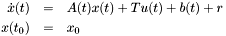
With:
Other variables are those of DynamicalSystem class.
A and B have corresponding plug-in functions.
Links with vectorField and its Jacobian are:
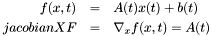
Main functions of the class:
linds->computeRhs(time); // to compute Ax+b+Tu (saved in member rhs) linds->computeJacobianXRhs(time); // the jacobian // to compute A(t): setComputeAFunction(pluginPath, functionName); linds->computeA(time); // to compute b(t): setComputeBFunction(pluginPath, functionName); linds->computeB(time);
Derived from DynamicalSystem, described by the set of n equations and initial conditions:
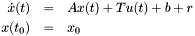
With:
Other variables are those of DynamicalSystem class.
Links with vectorField and its Jacobian are:
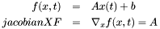
Main functions of the class:
ltids->computeRhs(time) // to compute Ax+b+Tu (saved in member rhs) ltids->computeJacobianXRhs(time) // to compute A(t).
Lagrangian second order non linear systems are described by the following set of nDof equations + initial conditions:
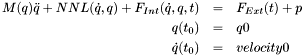
With:
 : non linear terms, time-independent - Vector of size nDof.
: non linear terms, time-independent - Vector of size nDof.The following Jacobian are also member of this class:
There are plug-in functions in this class for F_{int}, F_{Ext}, M, NNL and the four Jacobian matrices. All of them can handle a vector of user-defined parameters.
Call computeOperator(...) to compute value for operator = {FInt, FExt, Mass, NNL, JacobianQFInt, JacobianVelocityFInt, JacobianQNNL,JacobianVelocityNNL}. For any of them, link with plug-in function must be set using setComputeOperatorFunction(pluginPath,pluginName).
Links with first order dynamical system are: With 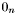 a vector of zero of size n, 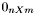 a n X m zero matrix and 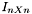, identity n X n matrix.
Warning: control terms (Tu) are not fully implemented in Lagrangian systems. This will be part of future version.
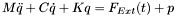
With:
And:
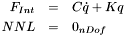
Mind that any item present in a class is also available in its derived classes. This means for example that has a plug-in function for LagrangianLinearTIDS.
Warning: if you create a new system using the copy constructor, any existing parameters in plug-in functions will also be copied. This means that no link between pointer for SimpleVector parameters will remain. In that case it may be better to re-set properly your parameters for the new created dynamical system.
 1.5.1
1.5.1